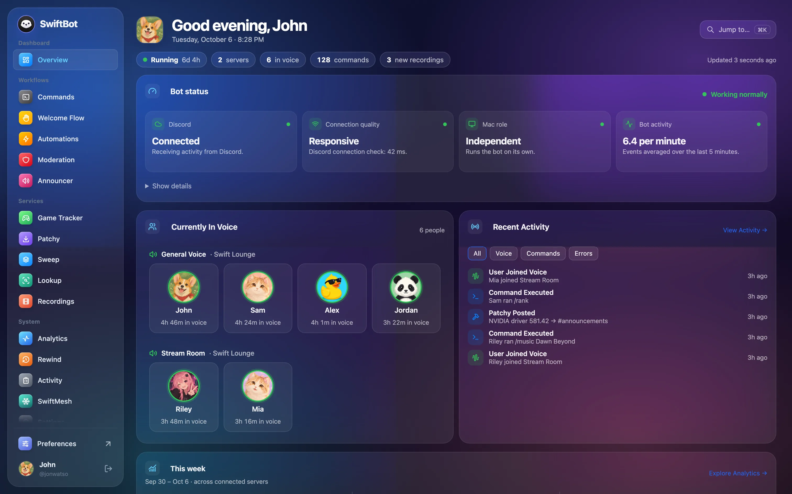
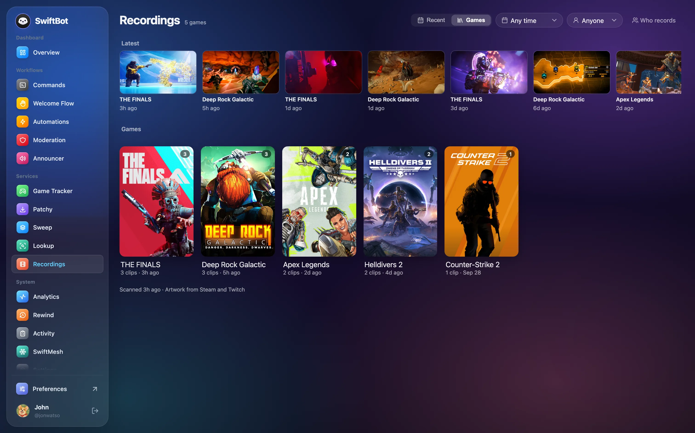
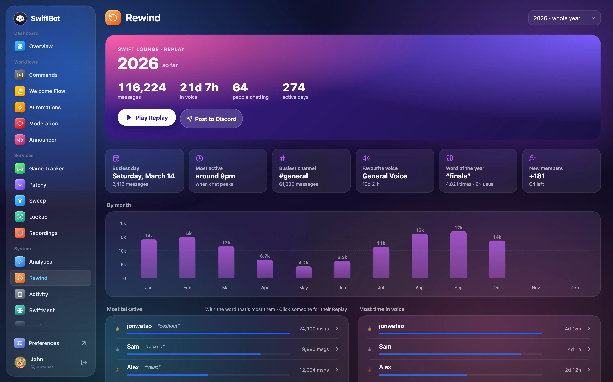
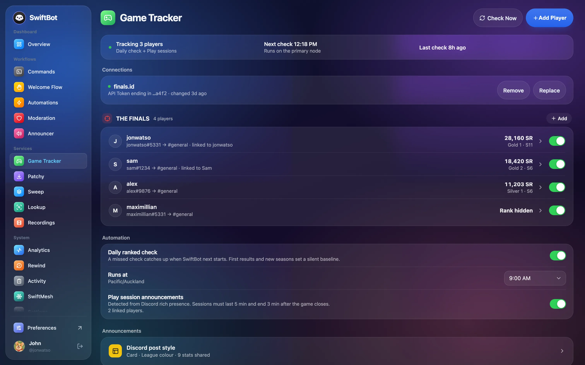
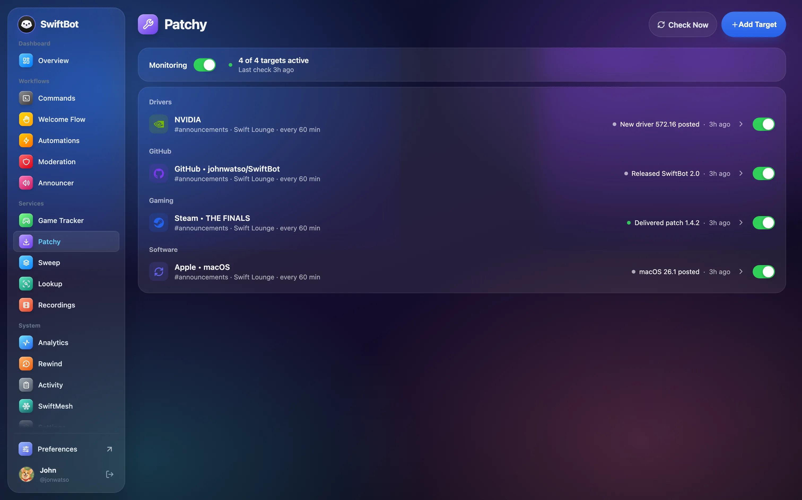
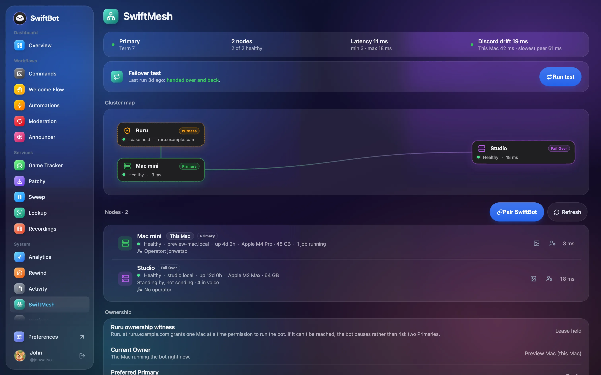
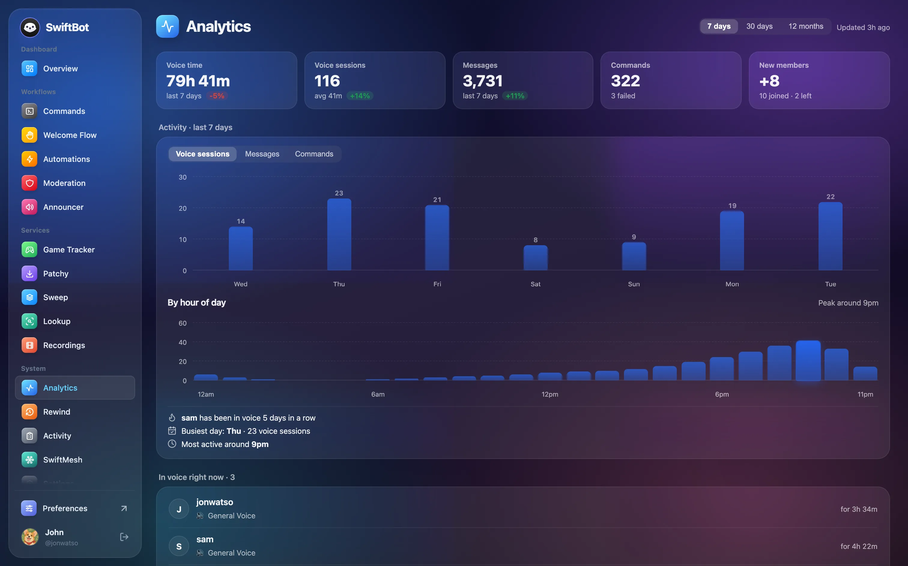
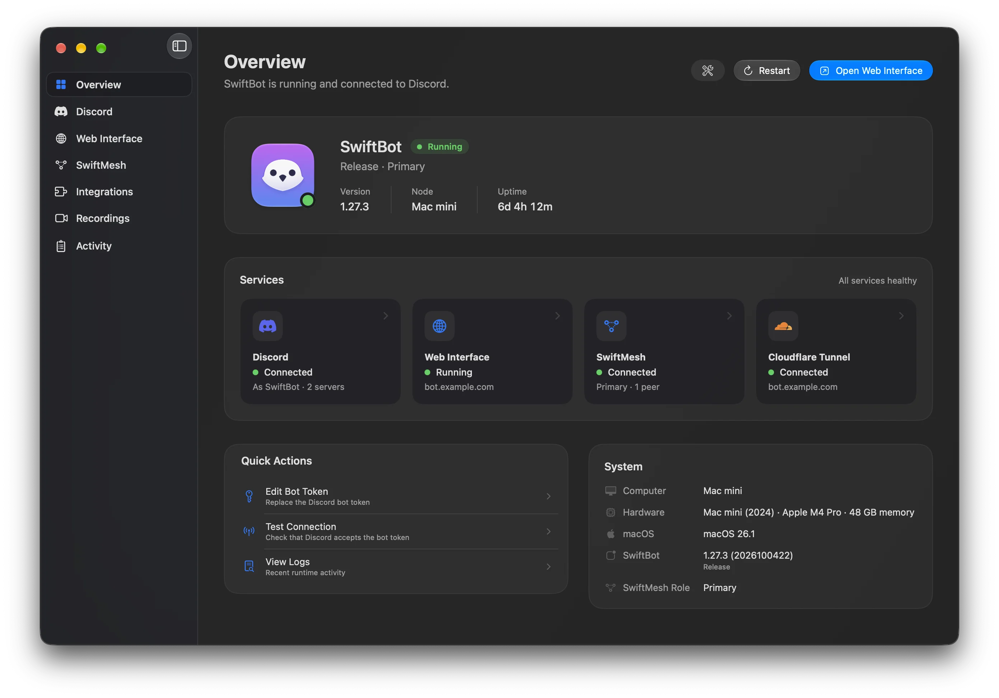
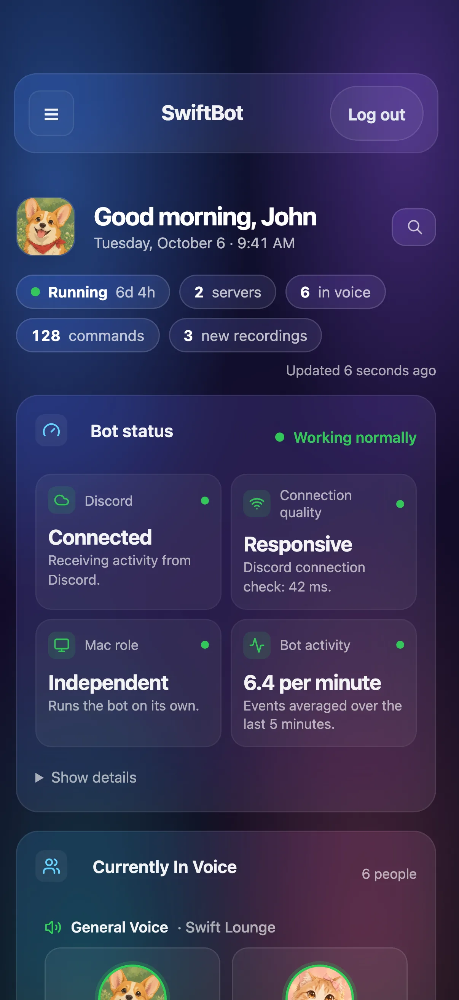

Your Discord bot, hosted on your Mac. Managed from any browser.
SwiftBot runs your bot on a Mac you own and gives you a full admin dashboard on the web. Handle moderation, welcome flows, voice announcements, game tracking, recordings, and failover from your phone, tablet, or desktop.
Free and open source, with no subscriptions or paid tiers. No hosted account, no cloud in the middle.
Latest release: v1.27 · Requires macOS 26.0 or later · Apple Silicon

Learn more: install SwiftBot · Discord bot setup · Admin Web UI · help docs
One dashboard for your whole server.
Every feature lives in the Web UI. Sign in with Discord from any browser and pick up where you left off.
See at a glance whether the bot is healthy, who's in voice right now, and what just happened.
Browse your group's game clips by game or date, see who was in each one, and watch them right in the browser.

A year in review for your server: the busiest day, top channel, word of the year, and a personal Replay for every member.

Follow your players' ranked progress, and post rank changes and play sessions to Discord automatically.

Watch drivers, Steam games, GitHub repos, and Apple releases, and post update alerts to the right channels.

Pair a second Mac as a standby. SwiftMesh keeps it in sync and hands over if your primary goes offline.

Voice time, messages, commands, and peak hours across the last week, month, or year.

Everything your server needs,
in one bot.
Turn on only the parts you want. Each one has its own page in the Web UI.
Automations & moderation
React to joins, messages, and voice events. Filter links, moderate messages, and clean up channels on a schedule, starting from ready-made templates.
Welcome Flow
Greet new members in a channel or by DM, hand out a starter role, and keep an eye on brand-new accounts.
Announcer Beta
A voice for your voice channels: SwiftBot joins, announces who arrives, and reads out the text channels you choose.
Recordings Beta
Point SwiftBot at your clip folders and get a shared library, sorted by game and tagged with who was playing.
Rewind
Your server's year in review, with a Replay for each member and a phrase counter for the in-jokes.
Game Tracker
Daily ranked checks and play-session posts for the games your group plays, with a Discord post style you design.
Patchy update alerts
Watch AMD, NVIDIA, Intel, Steam, GitHub, and Apple, and post clean release alerts to the right channels.
AI & Lookup
Answer repeat questions with on-device Apple Intelligence, and search game wikis with lookup commands.
SwiftMesh failover
Run a primary and a standby Mac, rehearse the handover, and stay online when one of them goes down.
Your Mac hosts it. You run it from anywhere.
SwiftBot keeps the bot itself on your Mac and puts the controls in a Web UI that works on any screen.


The Mac app is the host
Connect your Discord bot, publish the Web UI, pair SwiftMesh nodes, and check the bot's health at a glance. It sits quietly in the background.
The Web UI is the remote
Change rules, features, and settings from your phone, tablet, or any browser. Keep it on your network, or publish it over HTTPS with a Cloudflare Tunnel.
Get SwiftBot running in minutes.
Create the Discord app, paste the token into the Mac app, then manage everything else from the Web UI.
Create your Discord app
Make a bot in the Discord Developer Portal, copy the token, and enable the required gateway intents.
Launch SwiftBot
Paste the token during onboarding. SwiftBot validates it, stores it in Keychain, and builds the invite URL.
Open the Web UI
Sign in with Discord from any browser, then turn on the features you want: commands, automations, welcome flows, Patchy, and more.
Add failover when ready
Pair standby or worker nodes with SwiftMesh join codes and test the handover path before you need it.
Privacy first. Your server stays yours.
SwiftBot runs on your Mac and talks directly to Discord. There is no SwiftBot cloud account, hosted dashboard, or third-party sync service between you and your server.
Secrets stay in Keychain
Bot tokens and API keys are stored in the macOS Keychain, not in plain text config files.
Local app state
Settings, rules, logs, and cached Discord metadata live on the Mac running SwiftBot.
No required hosted account
Remote access is optional and controlled by your own Web UI, OAuth, and tunnel settings.
Scoped Web UI access
The Admin Web UI uses Discord OAuth, so only trusted admins can sign in to manage the bot.
A bot host that feels like a Mac app.
Lightweight by design.
A native Swift app keeps your bot responsive and quiet in the background, with a low resource footprint instead of a heavyweight runtime.
Headroom for busy servers
Your Mac is far more capable than a typical small VPS, and SwiftBot puts that power to work — handling bursts of joins, message rules, AI replies, and concurrent automations without breaking a sweat on large, active servers, while still staying light in the background.
Built for Apple Silicon
A native Apple Silicon app for macOS 26 or later. Full speed, no emulation, and a UI that feels at home on the Mac.
Built with Swift
Written natively in Swift and SwiftUI instead of an Electron shell. The interface feels immediate and the app stays light.
100% Open Source
Every part of SwiftBot is public and auditable, from the app to the update flow. Inspect the code, build it yourself, or follow along on GitHub.
Ready to add SwiftBot to your server?
Free, open source, and ready in about a minute. Download the latest signed release, then follow the setup guides for Discord, the Web UI, and SwiftMesh.
Get SwiftBotFree · Version 1.27 · Requires macOS 26.0 or later · Auto-updates.